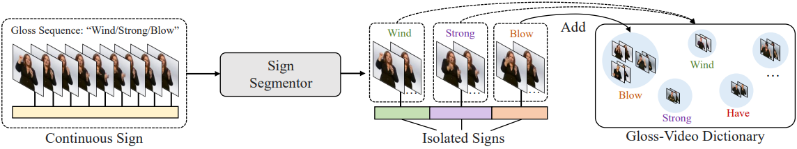

A Simple Baseline for
Spoken Language to Sign Language Translation with 3D Avatars
- Ronglai Zuo 1*
- Fangyun Wei 2*♦
- Zenggui Chen 2
- Brian Mak 1
- Jiaolong Yang 2
- Xin Tong 2
- 1 The Hong Kong University of Science and Technology
- 2 Microsoft Research Asia
- *: Equal contribution
- ♦: Corresponding author
Abstract
The objective of this paper is to develop a functional system for translating spoken languages into sign languages, referred to as Spoken2Sign translation. The Spoken2Sign task is orthogonal and complementary to traditional sign language to spoken language (Sign2Spoken) translation. To enable Spoken2Sign translation, we present a simple baseline consisting of three steps: 1) creating a gloss-video dictionary using existing Sign2Spoken benchmarks; 2) estimating a 3D sign for each sign video in the dictionary; 3) training a Spoken2Sign model, which is composed of a Text2Gloss translator, a sign connector, and a rendering module, with the aid of the yielded gloss-3D sign dictionary. The translation results are then displayed through a sign avatar. As far as we know, we are the first to present the Spoken2Sign task in an output format of 3D signs. In addition to its capability of Spoken2Sign translation, we also demonstrate that two by-products of our approach—3D keypoint augmentation and multi-view understanding—can assist in keypointbased sign language understanding.
Method overview



Overview of our Spoken2Sign translation baseline. Top: in-context dictionary construction. Middle: 3D sign estimation with our proposed SMPLSign-X. Bottom: Spoken2Sign translation in a retrieve-then-connect pipeline.

Citation
@inproceedings{zuo2024simple,
title={A Simple Baseline for Spoken Language to Sign Language Translation with 3D Avatars},
author={Zuo, Ronglai and Wei, Fangyun and Chen, Zenggui and Mak, Brian and Yang, Jiaolong and Tong, Xin},
booktitle={ECCV},
year={2024}
}